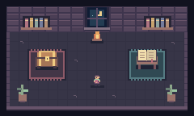

I’m Lifan. I build useful software. Have a look around.

Click an object. See what’s inside.
THE TREASURE CHEST
Scoped, reviewable information for agents. You approve external submissions.
Export patient-owned MyChart records through a local browser harness.
Track card benefits, fees, certificates, and loyalty expirations.
Ski and snowboard deals, with current and historical price context.
A source-to-podcast framework with reusable stages and validation.
THE OPEN BOOK
Build logs, experiments, and daily AI Builder Briefs.
Patient-owned exports and a portal that kept changing.
Small reminders, useful evidence, and keeping account data local.
What happened when I shared the tool with a technical audience.
THE BUILDER
I’m a staff engineer building local-first products, agent systems, and the evaluation loops that make them trustworthy.
I like useful tools, small experiments, and leaving a clear trail of what worked.
Build → test → inspect → improve.